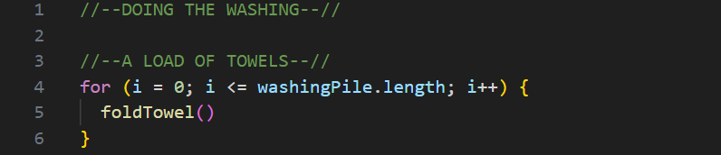
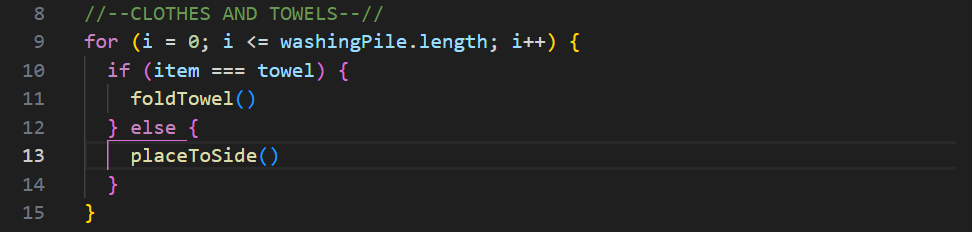
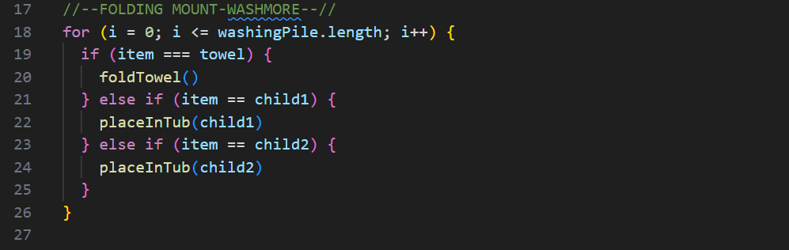
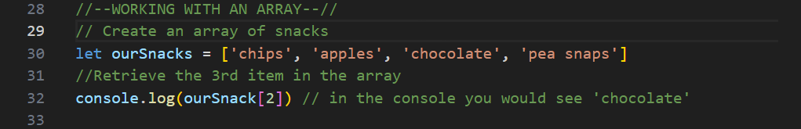
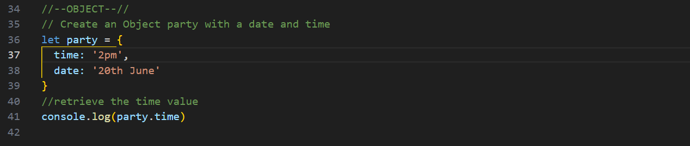
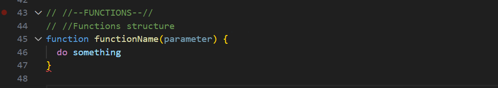
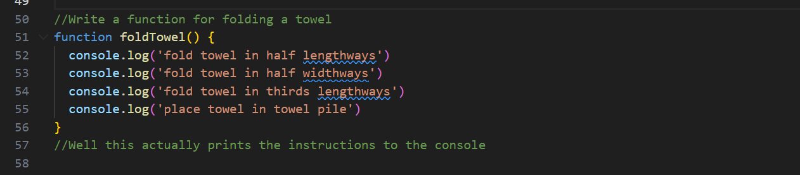

JavaScript Fundamentals
HTML, CSS and JavaScript can easily feel like a lot to learn. So lets break down some of the things some of the things it is helpful to know when starting out.
JavaScript, HTML and CSS - What are they and how do the relate to each other?
JavaScript, HTML and CSS are all programming languages that can be used together to create webpages. They can all be used in one file, but this is not best practice, but more commonly we create a file in each of them and use links between them to create what you see on the screen. Each one has a different function.
HTML: Some describe HTML as the builder. It is made up of 'tags' which contain the content for the page within them. The tags help to identify what the content is, for example is this a heading, or an article, or a link to another page. This is like the base for the page, and from there the other languages make changes to the appearance of the content and page.
CSS: CSS could be called the artist in this trio of languages. CSS gives the web browser the instructions about how they should display the content held in the HTML file. It controls things like size, colour and proximity to other content.
JavaScript: JavaScript could be called the magician. It works on how the user can interact with the page and can make things change in the HTML and CSS, for example it can react to clicks, or keystrokes, it can change what is in the HTML content, or what classes are acting on different parts which then could change how it appears. It can also let us put things like calculators or forms on our webpages.
Just going with the flow? - Control flow and loops
Control flow: relates to the order in which the computer works through the content of a script(or JavaScript file). Code runs from top to bottom unless it comes across something that changes or interrupts the flow.
Loops: One thing that changes the flow are loops, a loops asks the browser to repeat an action, or series of actions until the stated conditions are met. A basic loop ask for the same thing to be repeated until a set condition is met, a slightly more complicated loop might do two different things depending on certain conditions, and in even more complicated codes you can have a loop in a loop.
Applying it to life outside the computer: While it is embarrassingly domestic I am going to use folding washing as my example of a loop in everyday life. Lets say you have done a load that is all towels, folding this could be an example of a simple loop. You take a towel, fold it, put it in pile, grab the next towel and repeat until there are no more towels to fold. Written as a code this 'could' look like this:
To make it a little more complicated we might also have some clothes in there which we are leaving for later. The code representation might look like this:
Or maybe it has been some time since you did the folding and mount-washmore is threatening to collapse all over the floor... the loop might look something like this as you pop each persons clothes in baskets for them to sort in their rooms and fold the rest.
The DOM - What is it and how might you interact with it?
The DOM: When first starting on this journey the DOM felt a little bit daunting and a lot to get my head around. Hopefully I can outline it a little here to help it be a little bit more clear. So DOM stands for Document Object Mode. Breaking that down and looking at each of the words we start with document, and in this case we are looking at how the browser is seeing information we have given it, it is seeing a document that it is to read in its window.
Next we have object, which is how the browser is seeing the information in that document, it is a document with objects inside it, this gives us both some information about how the information is structured to the dom and how to interact with it. The structure is often described as a tree, with the window at the top, then the document, then all the other pieces coming from that. In this structure each item in the structure comes from one parent, ie the body flows down from the document, and the div inside the body flow from the body.
Finally we come to model, and this is letting us know that it is a representation or framework for that information.
While that might be as clear as mud for you still, an important take away is that the DOM is a tool we can use with our webpages to change information or appearance, or make them interactive.
Interacting with the DOM: We can use JavaScript to edit the HTML of our page when users interact with the page by moving the mouse over things, click on something, or on keystroke. We can do this either in the developer tools on a webpage, or through our JavaScript file.
Need to store something? Figuring out Arrays and Objects
Arrays and objects are both ways to store information.
Arrays are structured as a list of things. These things can be strings, numbers, other arrays, or objects. Arrays are denoted with [] and each item is given an index(i) number based on where it sits in the array, starting with [0] for the first item. You can use these index numbers to access the information in the array.
Objects store information also, but in a different way, in an object items are stored with a key and a value. You can then use the key to access the value. Objects are denoted with {}.
Is it functional? Functions, what are they and how do they help?
Functions are like building blocks of code. They look a little like this in their base form:
After declearing that we are creating a function we give the function a name, specify any parameters we will pass to it, and then in curly braces we tell it what it should do.
To return to our washing example, the foldTowel() function might look something like the code below. Where for each towel we would have instructions of how to fold it.
How do they help?
- We can use them in several different places with only having to call them rather than rewriting all of the code again and reduces likelihood of errors.
- They help improve code readability(if done well)
- They can be tested as small bits and debugged in small bits rather than if was all written out at every use
- Inbuilt functions save us time as they are already made for us and ready to implement in our code.